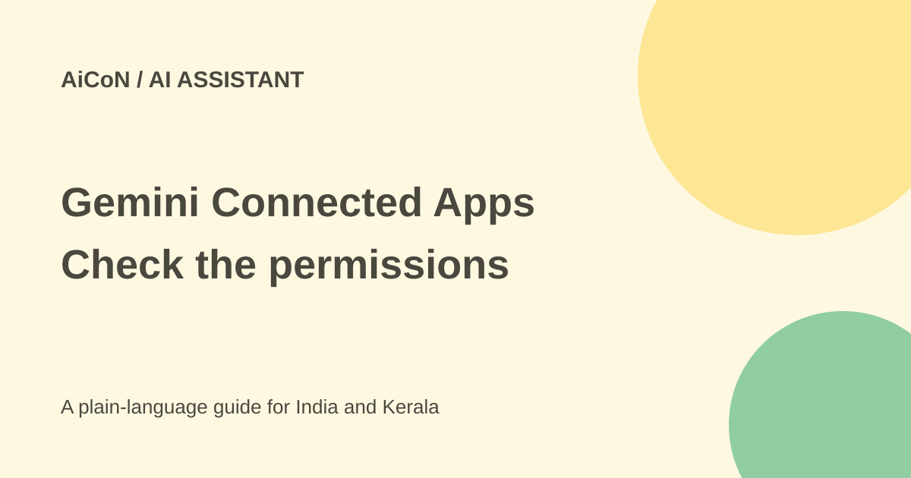

Gemini Connected Apps: access and permission checks
Gemini can use connected apps to find information and take actions. Google announced new work, creative and lifestyle partners on 23 September 2026. Availability varies by country, device and account.

What is a connected app?
A connection lets Gemini work with another service in a chat. Depending on the app and permission, it may read information, create content or make changes. It is more than a shortcut to a website.
Google's new partner list includes Airtable, Linear, monday.com, PandaDoc, Wispr AI and Zoho for work; Adobe, Picsart, Squarespace and Webflow for creative work; and apartments.com, Experian, Peloton and SeatGeek for lifestyle tasks.
What Indian users should check
The announcement does not promise every partner in India. Google's help page says availability varies by country, language, device and Gemini app. A partner may also have its own country limits or paid plan. Seeing a partner in a global launch is not proof you can use it from Kerala.
The checked help page is for personal accounts. Work and school accounts have separate rules. For personal accounts, turning Keep Activity off disables Connected Apps on web, iOS and watches; Android keeps only certain device, phone and messaging apps available. Do not change a privacy setting without reading its meaning.
How to connect carefully
- Sign in to Gemini with the intended Google account.
- Open Settings and Connected Apps. If it is not listed directly, look under Personal Intelligence.
- Find the app actually available to your account. Open Learn more to check supported and unsupported actions.
- Read the permission screen. Check which account, files and actions it covers before enabling it.
- Try a low-risk request first. Type @ and select the app, or name it in your request.
- Review output and changes. A connection does not mean the AI has correctly chosen the recipient, file or product.
- Return to Connected Apps and turn the app off when it is no longer needed. Read the privacy help on what disconnecting does and does not remove.
Free or paid?
The launch post does not give one price for the entire partner list. Access can depend on the Gemini account and the partner's own plan. Check current account screens and Indian checkout prices before paying; no fixed rupee price is confirmed here.
Privacy and mistakes
Be especially careful with financial, health and work services. Connect only what you need, and do not test with private customer files. Review outgoing messages, bookings and purchases before they happen. AI can misread a request or return an incomplete summary.
What changed since the original post?
The new partners are confirmed in the launch post. We added the detailed country/account/device and Keep Activity limits from Google's help page. No app was connected or account permission granted during this review.
Frequently asked questions
Why is an announced app missing?
Rollout, country, account type and device can affect the list.
Do all apps work with Keep Activity off?
No. The official help page lists only limited Android exceptions.
Can I undo a connection?
You can disconnect in Settings. Read the privacy guide for what data may remain.
Sources: Google partner announcement · Google account and permission help. Checked 7 October 2026.